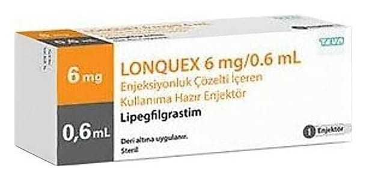

Lonquex 6 mg/ 0.6 ml Enjeksiyonluk Çözelti İçeren Kullanıma Hazır Enjektör, 1 Adet

Ne için kullanılır
KT · Bölüm 1• LONQUEX bir blister içerisinde sabit bir enjeksiyon iğnesi olan kullanıma hazır enjektörde enjeksiyonluk çözeltidir (enjeksiyon). LONQUEX, berrak ve renksiz bir çözeltidir. Her kullanıma hazır enjektör 0,6 mL çözelti içerir. • LONQUEX, etkin madde lipegfilgrastimi içerir. Lipegfilgrastim, Escherichia coli adı verilen bir bakteri nin içinde biyoteknoloji yoluyla üretilen uzun etkili modifiye bir proteindir. Sitokinler adı verilen bir protein grubuna aittir ve vücudunuz tarafından üretilen doğal bir proteine (granülosit-koloni uyarıcı faktörü [G-CSF]) çok benzerdir. • LONQUEX, yetişkinler ve 45 kg ve üzeri ağırlıktaki çocuklarda (kronik miyeloid lösemi ve miyelodisplastik sendromlar hariç) kemoterapiye (hızlı büyüyen hücreleri yok eden ilaçlar) bağlı nötropeni (beyaz kan hücre sayısı düşüklüğü) adı verilen durumun süresini kısaltmak ve febril nötropeni (ateş ile birlikte beyaz kan hücre sayısı düşüklüğü) gelişimini azaltmak için kullanılır. • Beyaz kan hücreleri (akyuvarlar), vücudunuzun enfeksiyonlarla savaşmasına yardımcı olduklarından dolayı önemlidirler. Kanser tedavisi vücudunuzdaki bu hücrelerin azalmasına sebep olabilir. Bu sebeple kanser tedavisine karşı çok duyarlıdırlar. Eğer kanda beyaz kan hücrelerinin (akyuvarların) seviyesi düşerse (nötropeni), bakterilere karşı savaşmaya yetecek hücre bulunmayabilir ve bu da enfeksiyona yakalanma riskin izin artmasına sebep olabilir. Doktorunuz LONQUEX'i kemik iliğinizin (kemiğin kan hücreleri üreten kısmı) vücudunuzun enfeksiyonla savaşmasına yardım eden beyaz kan hücrelerini (akyuvarlar) daha fazla üretmesini desteklemek amacıyla vermektedir.